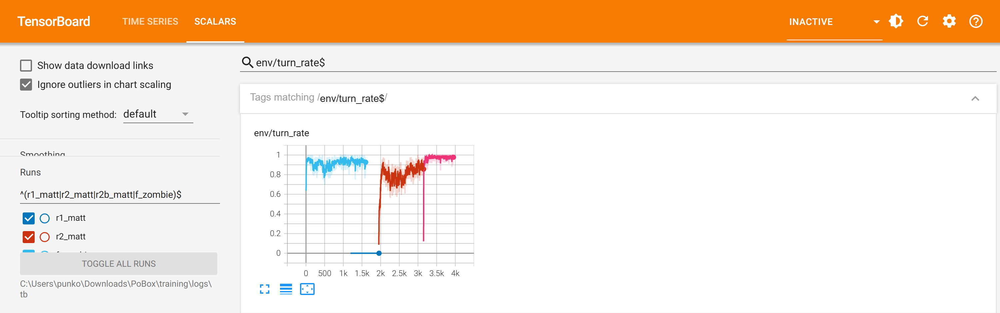
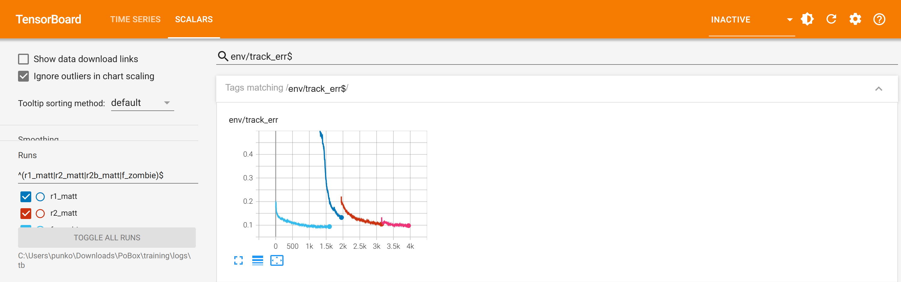
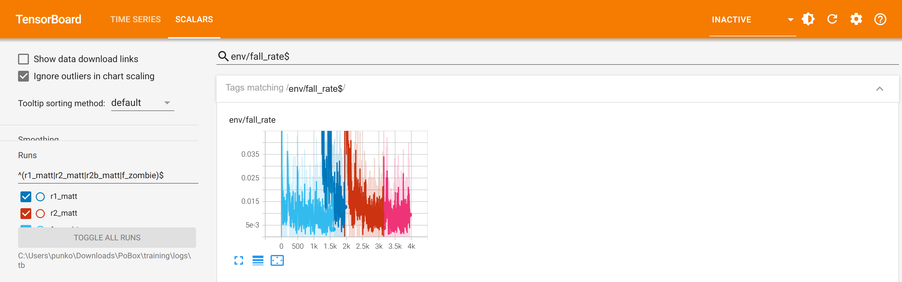

Training report: turning (R2), Matt and Zombie
2 October 2026 · MuJoCo Warp 3.14, 4,096 worlds · runs r1_matt (walk, for comparison), r2_matt, r2b_matt, f_zombie · exams in plain C MuJoCo 3.5.0, the version the game runs
R2 teaches a boxer to turn and face an opponent standing anywhere round it, while keeping what R0 and R1 taught
(standing through shoves and thrown cubes, walking at the speed asked). The charts are TensorBoard's, one colour a
run, on one axis of training iterations: dark blue r1_matt, red r2_matt,
pink r2b_matt (R2 continued with a changed reward), light blue f_zombie
(Zombie's body, started from Matt's R2, counting from 0).
Result
| Exam (30 episodes each, no exploration noise) | Mark | Matt R2 | Matt R2b | Zombie |
|---|---|---|---|---|
| Stand: still up after 20 s of shoves and cubes | 95% | 100% | 100% | 100% |
| Walk: speed error / falls a minute | 0.15 m/s / 0.2 | 0.02 / 0 | 0.04 / 0 | 0.01 / 0 |
| Turn: facing within 15 degrees inside 3 s, still up | 90% | 73% | 100% | 93% |
| Joints: fastest against its speed limit | 1.00 | 0.40 | 0.45 | 0.38 |
| The gate in Unity (replay, closed loop, 25 episodes) | pass | pass (8.6e-6; 4.80 v 4.80 steps/s) | pass (6.7e-6; 3.60 v 3.60) |
1. Turning: facing the opponent inside 3 seconds

env/turn_rate: share of ended turn episodes with the facing error below 15 degrees by 3 s and no fall, measured with exploration noise on. R2 rose from 0.6 to about 0.9 but plateaued noisily; its exam (noise off) was 73%: the policy settled 15 to 30 degrees off. The facing reward was 0.6 cos(error), worth 94% of its maximum at 20 degrees. R2b adds a narrow term exp(-(error/0.2)2); the curve jumps to 0.97 to 1.0 and the exam to 100%. The dark-blue line at 0 is R1, which had no turn episodes.2. Walking at the speed asked

env/track_err: mean |velocity - command| over walk episodes, m/s, with noise. R1 brought it from about 0.5 to 0.13; R2 and R2b hold 0.10 to 0.12 while turning is learned (no forgetting), and Zombie, warm-started from R2 on a heavier body, starts near 0.2 and settles at 0.09. Exams with noise off: 0.04 (Matt R2b) and 0.01 (Zombie) against a mark of 0.15.3. Falling over

env/fall_rate: share of ended episodes that ended in a fall, all kinds, with shoves of 10 to 30 N s, cubes and ±15% randomised mass, friction, damping and gains. It stays at 0.5 to 1.5% throughout; each run's first iterations spike (exploration noise reset to 0.3, new episode kinds). Adding turns did not cost balance. Exams with noise off: no falls in 30 stands, walks or turns for either boxer.Compared with earlier runs
Better. R1 could stand and walk but never had to turn. R2 learned to turn but not precisely (73% in the exam). R2b turns every time without losing walking or balance, and passes in Unity as it does in C MuJoCo. Zombie, taught from Matt's R2 on his own heavier body, passed all three rungs first time (93% turning) even under the old reward. The other five boxers now start from R2b.